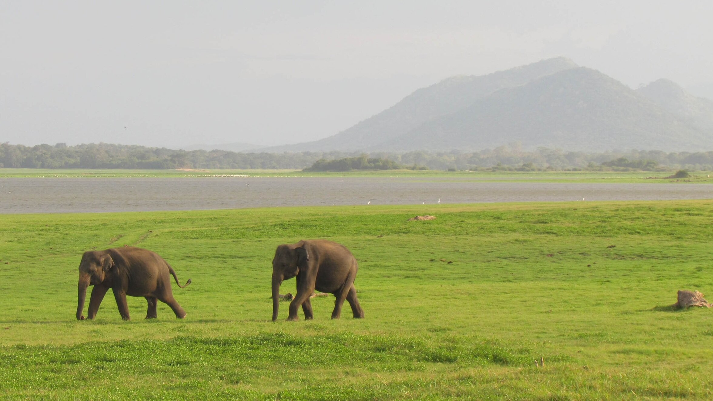
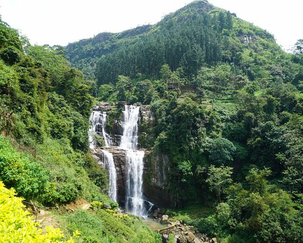

<!DOCTYPE html>
<html lang="en">
<head>
    <meta charset="UTF-8">
    <meta name="viewport" content="width=device-width, initial-scale=1.0">
    <title>Home page</title>
    <link rel="stylesheet" href="lifess.css">
    <script src="index.js" defer></script>
</head>
<body>
   <!--<h1 id="mainheader"> Wild Life of Srilanka.</h1> 
   <div id="mainimg-container">
    <div class="link-overlay">
        
        <a href="Introtoslwildlife.html">Srilankan wild Life</a>
        <a href="departmentpage.html">Department of Wild Life</a>
        <a href="lepords.html">Leopards </a>
        <a href="animalsinsl.html">Animals in Sri Lanka</a>
        
    </div> 
    
   </div>
   
   <div class="subcontent">
    
    
    <div class="subcontent-1"><p>When pondering over the reasons to visit Sri Lanka, the highly diverse biodiversity it possesses makes
it one of the best destinations for travelers in the world. It has one of the most magnificent wildlife in South Asia. Thorough knowledge
 about this biodiversity can compel someone to visit Sri Lanka to enjoy its unique wildlife. Most of these fauna and flora dwelling in these
  wildlife sanctuaries are endemic to Sri Lanka. Once upon a time, Sri Lanka was known as an island covered in a green canopy. However, with the
urbanization and industrialization taking its roots Sri Lankan vegetation became thinner. To protect the thinning wildlife from the egoistic needs of the 
human beings, they established nature reserves, national parks, jungle corridors and wildlife sanctuaries reserving area of 13% from the whole island.</p>
    </div>
    <div class="onepic">
        
    </div>
    </div>
   </div>
</div>
<br>
   <div class="subheading">
    <p>Forests in Sri Lanka</p>
   </div>
   <div class="subcontent">
    <div class="subcontent-1">
        <p>Sri Lanka is home to about four different types of forest, which are found in different parts of the island. Very often,
             these forests have endemic species of fauna and flora which can only be found in this region. If you are a nature enthusiast, 
             we recommend that you add a visit to a Sri Lankan forest to your itinerary.<br>Not much sun reaches the rainforest floor and the
              little that filters down from the canopy has a green tint to it. Dry leaves mixed with mud crunch and squelch as you walk over them 
              during your trek. Apart from that, all you will hear are bird songs and the unrelenting sound of chirping crickets. The Sinharaja Rainforest is a 
              truly magnificent place, an unassuming wonderland that is only a short distance away from tourist hubs like Galle.<br>
              The rainforest is rich in biodiversity and accounts for 60% of the country’s 306 endemic tree species! Sinharaja is also an important catchment 
              area for primary rivers in the southern region and because of this the forest also boasts many endemic species of fish. 
              The rainforest experiences a biannual monsoon cycle, making it one of Sri Lanka’s wettest regions, 
              but that only adds to the beauty of this tropical lowland rainforest.<br>Few forests include: <ul><li>Sinharaja</li><li>Yala</li></ul></p>
    </div>
    <div class="subpic">
        
    </div>
   </div>
   <br>
   <div class="subheading">
    <p>Animals of Sri Lanka</p>
   </div>
   <div class="subcontent">
    <div class="subcontent-1">
        <p>Sri Lanka is an island country in South Asia. It lies in the Indian Ocean, southwest of the Bay of Bengal, 
            and southeast of the Arabian Sea; it is separated from the Indian subcontinent by the Gulf of Mannar and the Palk Strait. 
            Sri Lanka shares a maritime border with India and the Maldives.
            Western Ghats of India and Sri Lanka were included among the first 18 global biodiversity hotspots due to high levels of 
            species endemism. The number of biodiversity hotspots has now increased to 34. Sri Lanka has the highest biodiversity per unit 
            area among Asian countries for flowering plants and all vertebrate groups except birds. A remarkably high proportion of the species 
            among its flora and fauna, 27% of the 3,210 flowering plants and 22% of the mammals, are endemic. Sri Lanka supports a rich avifauna of that 
            stands at 453 species and this include 240 species of birds that are known to breed in the country. 33 species are accepted by some ornithologists
             as endemic while some ornithologists consider only 27 are endemic and the remaining six are considered as proposed endemics.</p>
    </div>
   <div class="subpic">
    
   </div>
   </div>
   <br>
   <div class="subheading">
    <p>The Waterfalls of Sri Lanka</p>
   </div>
   <div class="subcontent">
    <div class="subcontent-1">
    <p>Don't go chasing waterfalls…or do! Especially if you have a partner to share the experience with. Sri Lanka is home to more
         than a hundred of these stunning feats of nature, typically surrounded by lush greenery and cascading into stunning pools
          that beckon visitors for a swim. Visiting the waterfalls of Sri Lanka can be an adventurous undertaking, but the romantic
           atmosphere that they create in the secluded depths of the island's jungles makes them an ideal attraction to include on 
           any couple's itinerary!
        Here are five of the best:<ul><li>Laxapana Falls, Nuwara Eliya</li>
            <li>Ravana Falls, Ella</li>
            <li>Baker's Falls, Horton Plains</li>
            <li>Bopath Ella, Ratnapura</li>
            <li>Diyaluma Falls, Badulla</li></ul></p>
    </div>
    <div class="subpic">
        
    </div>
    
   </div>

</body>
<footer>
    <div class="footer-content">
        <div class="footer-left">
            
            <h2>Dream Come True for nature lovers</h2>
            <p>
                Discover Sri Lanka's enchanting landscapes and wildlife, where nature's wonders unfold—a dream come true for enthusiasts.  
            </p>

        </div>

        <div class="footer-right">
            <p>Links</p>
            <div class="footer-link">
                <a href="index.html">Home</a>
                <a href="Introtoslwildlife.html">Intrudction to Srilankan wild Life</a>
                <a href="departmentpage.html">Department of WildLife</a>
                <a href="lepords.html">Leopards</a>
                <a href="animalsinsl.html">Animals in Sri Lanka</a>
                <a href="yala.html">Yala National Park</a>
                <a href="wilpatu.html">Wilpattu National Park</a>      
            </div>
            <div class="contact-info">
                <p>Ways to Contact us</p>
                <p>Email: wildlifesl@slt.com </p>
                <p>Phone: +940000000 </p>
                <p>Address: 811A, Jayanthipura,. Battaramulla, Sri Lanka</p>
            </div>
        </div>
    </div>


</footer> -->
<body>
    <header>
        <h1 id="mainheader"></h1>
        
    </header>

    <div id="content"></div>

    <footer>
        <div class="footer-content">
            <div class="footer-left">
                
                <h2 id="tagline"></h2>
                <p id="contactInfo"></p>
            </div>
            <div class="footer-right">
                <p>Links</p>
                <div id="footerLinks"></div>
            </div>
        </div>
    </footer>
</body>

</html> 
